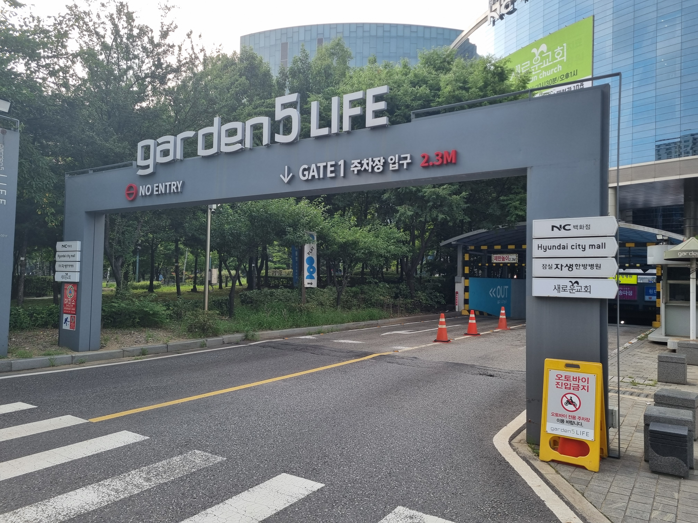
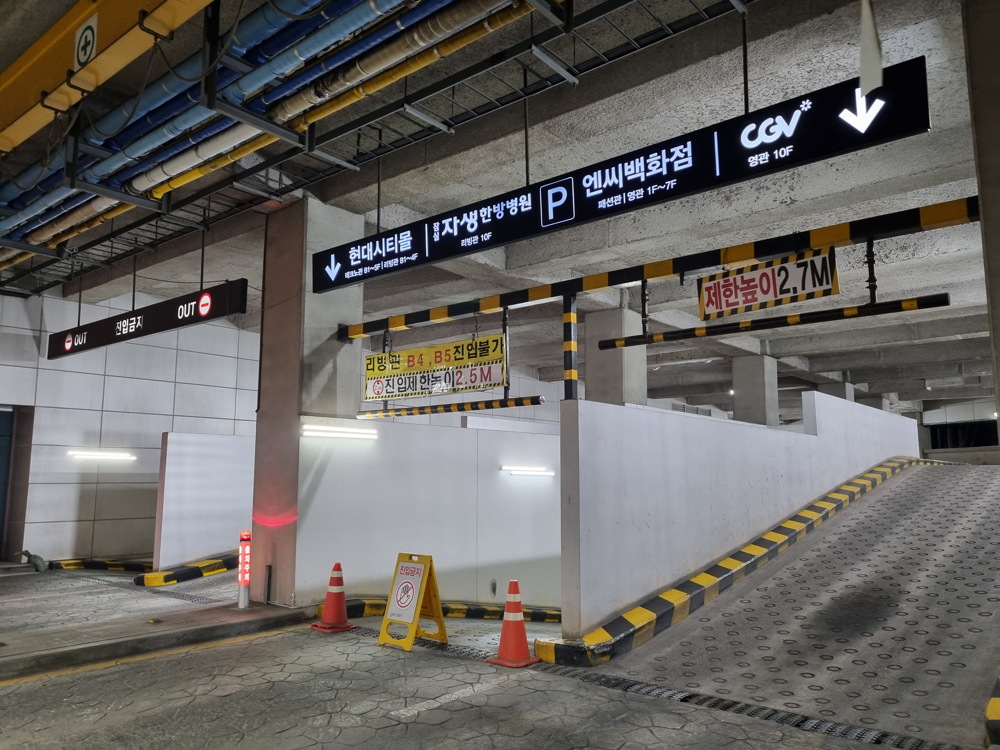
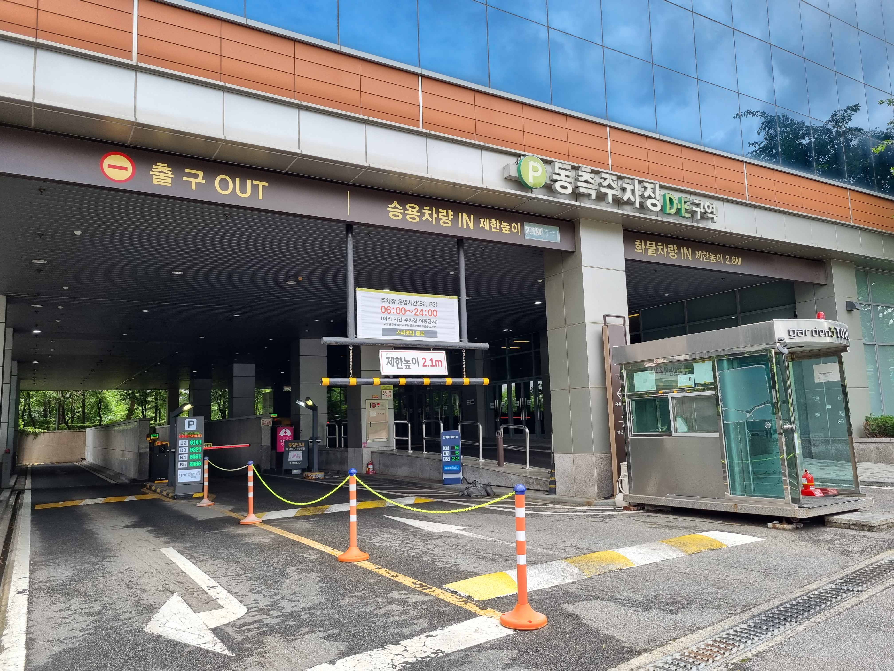

화물차 필독 규정
라이프동 · 툴동 완벽 비교
🚧 가든파이브 차량 진입 제한 높이 안내
가든파이브는 건물과 게이트에 따라 허용 진입 높이가 엄격히 다릅니다. 보유 차종에 맞는 전용 게이트를 사전에 반드시 확인하세요.
📸 게이트별 제한 높이 및 허용 차종
라이프동 1번 게이트
최고 높이 2.3m

일반 승용차 및 백화점·몰 방문객 전용 게이트
• NC백화점, 현대시티몰 쇼핑 고객 및 일반 승용차는 1, 2번 게이트 모두 이용 가능합니다.
• 2.3m를 초과하는 탑차 및 화물차는 진입이 불가하므로 2번 게이트로 우회해야 합니다.
라이프동 2번 게이트
최고 높이 2.7m

화물 조업 차량 및 3.5톤 마이티 전용 게이트
• 마이티 3.5톤(단축) 및 일반 탑차 화물 차량은 반드시 2번 게이트를 통해 지하 2층 조업 하역장으로 진입합니다.
• 지하 2층 하역 구역에서 짐을 내린 뒤 대형 화물 승강기를 통해 지상 상층부로 이동 가능합니다.
⚠️ 주차 주의사항:
지하 4·5층 일반 주차 구역은 2.5m 제한이 적용되므로 화물 차량은 반드시 지하 2층 조업 하역 구역을 이용해 주시기 바랍니다.
지하 4·5층 일반 주차 구역은 2.5m 제한이 적용되므로 화물 차량은 반드시 지하 2층 조업 하역 구역을 이용해 주시기 바랍니다.
툴동 동측 주차장 (D·E구역)
화물차 제한 2.8m

지상 6·7층 드라이브인 램프 진입 전용 게이트
• 지상 6층·7층 하역장으로 올라가는 화물 차량은 반드시 동측 주차장(D·E존) 화물 전용 진입로를 이용해야 합니다.
• 최대 2.8m 높이까지만 허용되므로, 사전에 화물차 높이를 확인 부탁드립니다.
• 툴동 서측 주차장은 지하 주차장으로만 연결되는 일반 승용차 전용입니다.
📋 차종별 게이트 진입 가이드
| 차종 구분 | 라이프 1번 (2.3m) |
라이프 2번 (2.7m) |
툴동 동측 (2.8m) |
|---|---|---|---|
| 승용·카니발·스타렉스 | 가능 | 가능 | 가능 |
| 1톤 저상 탑차 (지하진입) | 가능 | 가능 | 가능 |
| 마이티 3.5톤 (단축) | 불가 | 가능 (지하2층) | 사전 문의 |
| 2.8m 초과 하이탑 | 불가 | 불가 | 불가 (1층 하역) |
※ 특장 탑차나 루프랙 설치 차량은 진입 전 실제 높이를 반드시 실측하시기 바랍니다.
🔗 내 차에 맞는 가든파이브 창고 둘러보기
차량 제원별 진입 여부 상담 및 공실 안내
차종과 높이를 알려주시면 가장 진입하기 편한 전용 호실을 안내해 드립니다.
📞 010-5024-8456 진입 규격 상담